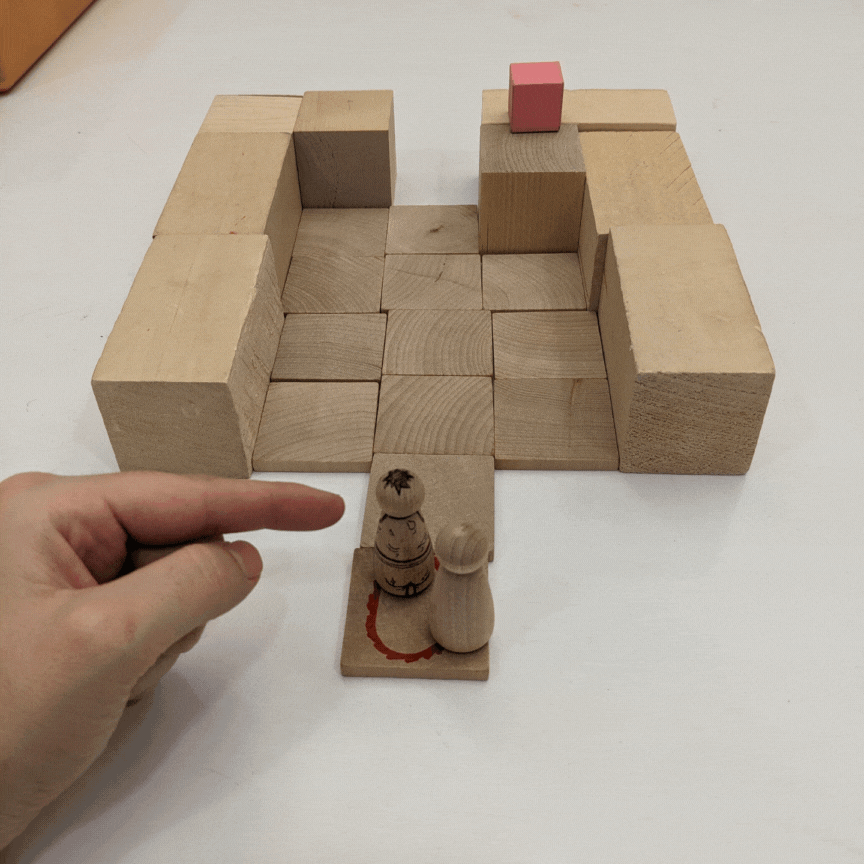
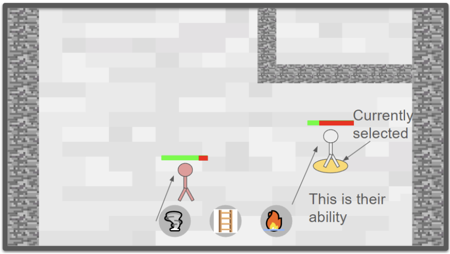
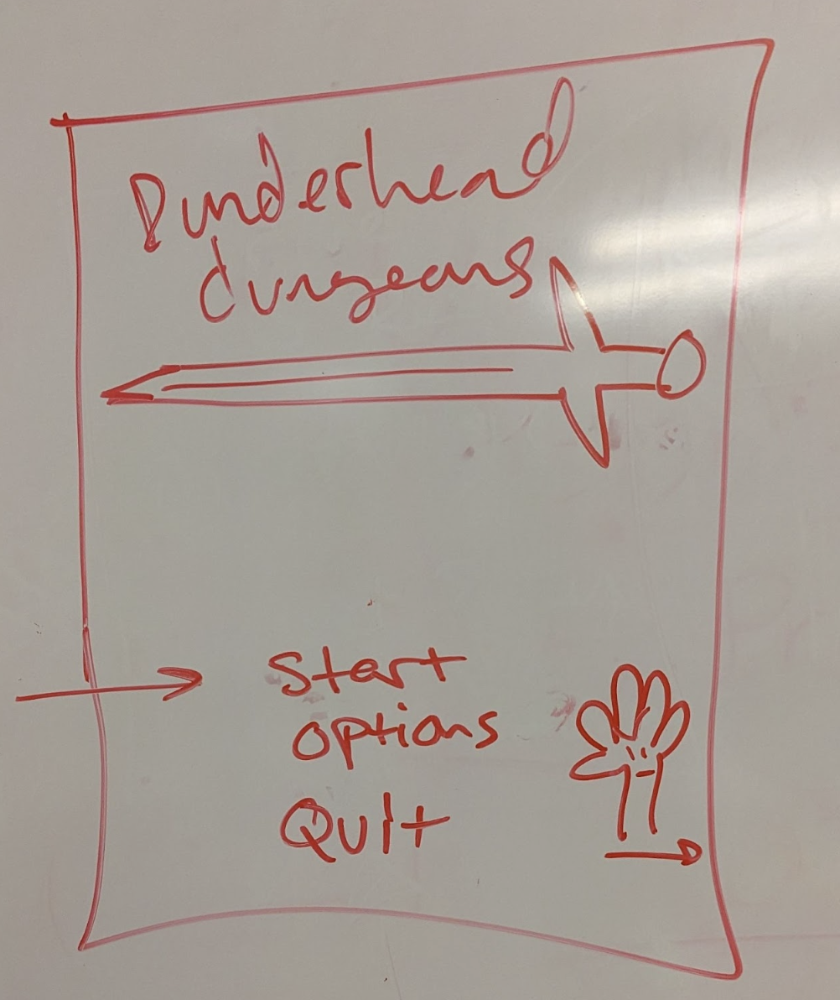
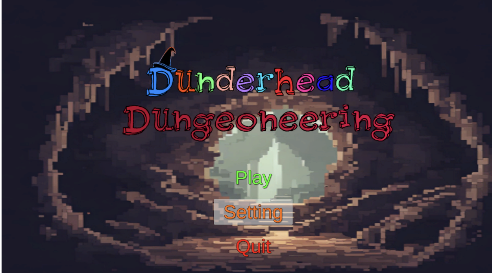
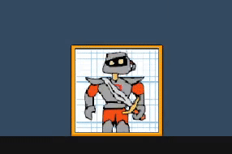
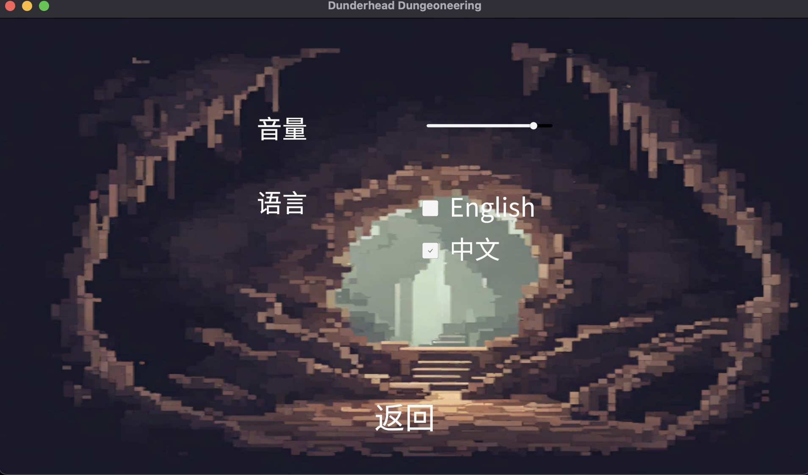
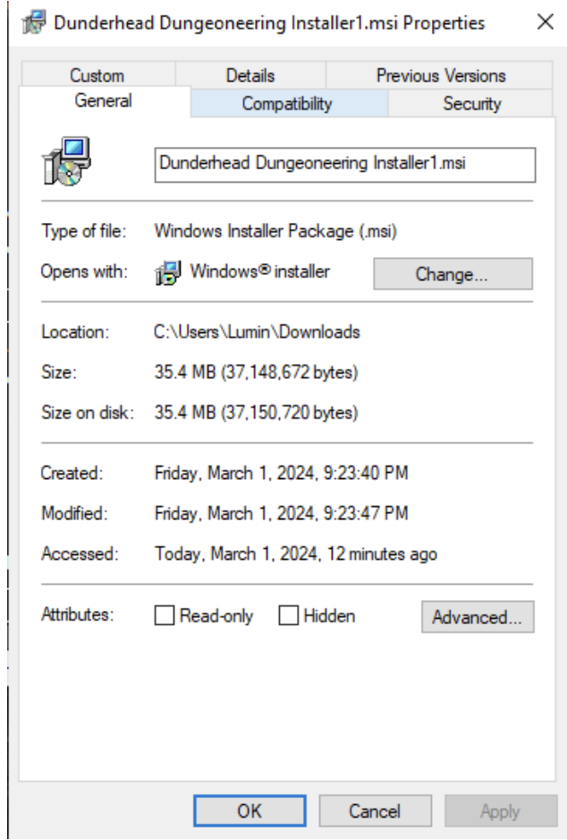

We made a vertical slice of a game for a university course. We did it on a team consisting of Brandon Hwu, Kayla Garcia, Lumina Kinsinger-Dang, Shuchen Liu, Thurmann Pangilinan and Wyatt Hawes.
Design Question: How can we make giving commands to the units intuitive and one handed?
 We had several different ideas for how the game could be played one handed, and after lo-fi prototypes we learned that in a vacuum both work fine and we actually need to implement these into gameplay and see how they feel under pressure.
Design Question: What does feedback help confirm you've correctly clicked a button?
 For each button in the main menu and in the settings menu we play the same sound effect when the player presses it as well as a white translucent rectangle over the button when the cursor is over it.
Design Question: How can we keep the gameplay buttons minimal and accessible while staying in line with our thematic vision?
We tried several different simple ideas for where the buttons should be in relation to the player and screen. Ultimately we decided to go with a single persistent “portrait button” for each party member, which activates the skill. Above we can see the “Highlighted” animation, which is the portrait wiggling, and the animation for when the button is pressed. The “Pressed” animation will remain until after the player releases the click.
For the main menu image the buttons become partially camouflaged by the background when grayscaled and to counteract it what can be adjusted is the color of the text or surround the text with a white or black box.
The default control scheme is entirely mouse driven by one hand. Similar to RTS games like Starcraft, the player can select individual units by left clicking on them or left click and drag select to select multiple. The player may also click on the character’s portrait to single select them. Left Clicking when not highlighting a unit will deselect all units. The scroll wheel cycles through the list of available party members, individually selecting them so that the player can activate the party member’s skill. Middle mouse click activates the currently selected character's ability.
This is also conveyed in a non-audio for visually where the button will become pressed and released before doing the associated action.
This will also be conveyed by the star effect when a coin is collected by a character.
Our Core gameplay is the only place that should require focused attention, and its gameplay should be relatively untaxing/slow. The most intense instances of control will be when players are in narrow hallways or need to deal with level hazards which shouldn’t last for much longer than 30 seconds to a minute. On top of that, we intend for levels to be finished (but not 100% completed) within 2-3 minutes. As long as the party members are selected and aren’t in active danger, the player could just walk away from the game and nothing would happen to them.
Languages supported by our game are US English and Simplified Chinese. For the Simplified Chinese translation, one of our teammates is a native speaker. We used the localization tool that comes with Unity. In the main menu of the game, there is a "Setting" button that players can tap to see the option to switch languages. You can also switch languages in the game by pressing the ESC key to access the setting menu. This is like most modern video games.
Our game is an offline game and it does not require any network data transfer while the player is playing. For fully offline play, players only need to download an installer, after which they can start playing with just one click to install. The file size of the installer is 35.4mb.
Our game’s home platform is Windows, and it can be adapted to MacOS and Linux without major engineering effort since it is a Unity game.
For this project, I assisted in the gameplay and helped to convert the level art made for our project into a tile palette. The tile palette was used for our tilemaps and allowed us to make levels easily. I also implemented enemies that can spot the player and run after them along which involved making a navmesh for them. These enemies also go to the last place the player was spotted instead of stopping immediately once the player breaks line of sight. For our vertical slice I adjusted the levels to be wider to improve the navmesh in the level and added a basic enemies throughout the layout.
In our project, I worked on both the visual and technical aspects of the project. For the visual side, I dedicated time to making art for the title and menu screens, ensuring they grabbed players' attention from the get-go. The creation of coin assets was also within my scope, where I focused on making them visually engaging and distinct. On the technical front, I delved into coding to enable smooth interaction between characters and coins, adding depth and immersion to the gameplay experience. Moreover, I worked on various user interface elements, and helped out my teammates on other things when they asked me to.
I was the lead producer for the project, so I spent a fair amount of time making sure we all had a fairly balanced workload, and that we had meetings scheduled. The rest of the team was very helpful in this regard, so I had plenty of time to work on the gameplay. In terms of game content I had my hands in a little bit of everything but primarily in Gameplay programming. I worked on the UI, and unit controls (particularly where those intersected.) I also wrote a lot of the level interactions, including in-game pressure plates, and the early version of the Bee-Launcher. I also Wrote the scripts to handle the tilemap layers, and pitfalls. I also contributed a small amount to the art assets and spent time making animations for taking damage, and falling into holes.
I was responsible for the menu design, part of the level design, volume control system, depolyment and localization of this project. I designed and wrote the main menu interface as well as the in-game settings menu. I was also responsible for the translation of the localization text and the code writing. Finally the different scenarios were put together and the build setting was adjusted for the build, and at the end I made the exported build file into an .msi file (Windows Installer) using Visual Studio.
For this project, my contributions were mainly in the visual and design aspects of the project. I created each of the character designs, the in-game sprites, and tilesets. I also wrote the personalities, characteristics, and backgrounds for each of the planned characters, including designing each of their flaws that were planned be incorporated into gameplay. I worked on one of the lo-fi prototypes for the splash experience, creating a storyboard in Adobe Illustrator for how the opening moments of the game would play out. I designed the desktop icon, as well as one of the logos that we were planning on including in the project. I also provided miscellaneous contributions to the documentation of the different stages of the project.
For this project, my contributions focused on the movement and some minor gameplay mechanics. I implemented the 'click to move' style movement that allows characters to be controlled. I also implemented the character actions and their flaws (dropping weapon and wandering) which used the art assets created by other members of the team. Towards the end of the project, I focused on using the tile map created by the team to contribute to the creation of the first level and touched up the 'bee launcher' trap. For the prototypes, I mainly worked on the Gameplay prototypes of each spring.
Background Music: https://www.fesliyanstudios.com/royalty-free-music/download/8-bit-adventure/2282
Menu Button Sound Effect: https://mixkit.co/free-sound-effects/click/
Coin Pickup Sound Effect: https://www.zapsplat.com/music/game-sound-coin-collect-1/2
Game Over Sound Effect: https://pixabay.com/sound-effects/search/game-over/
Game End Sound Effect: https://pixabay.com/sound-effects/search/level/